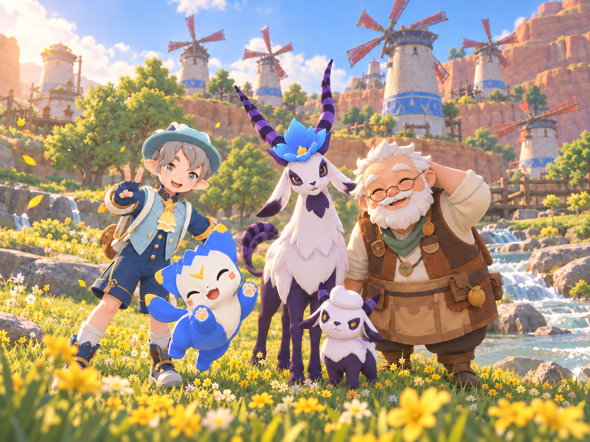
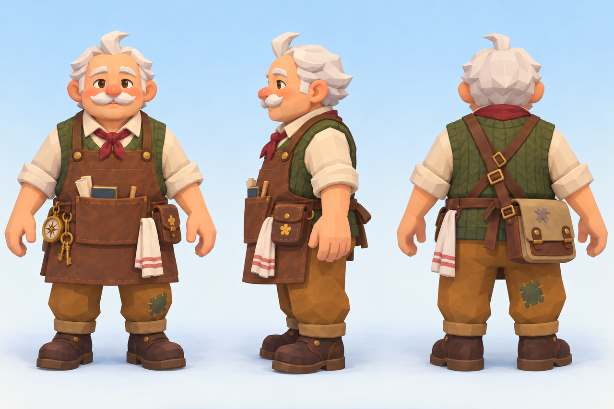
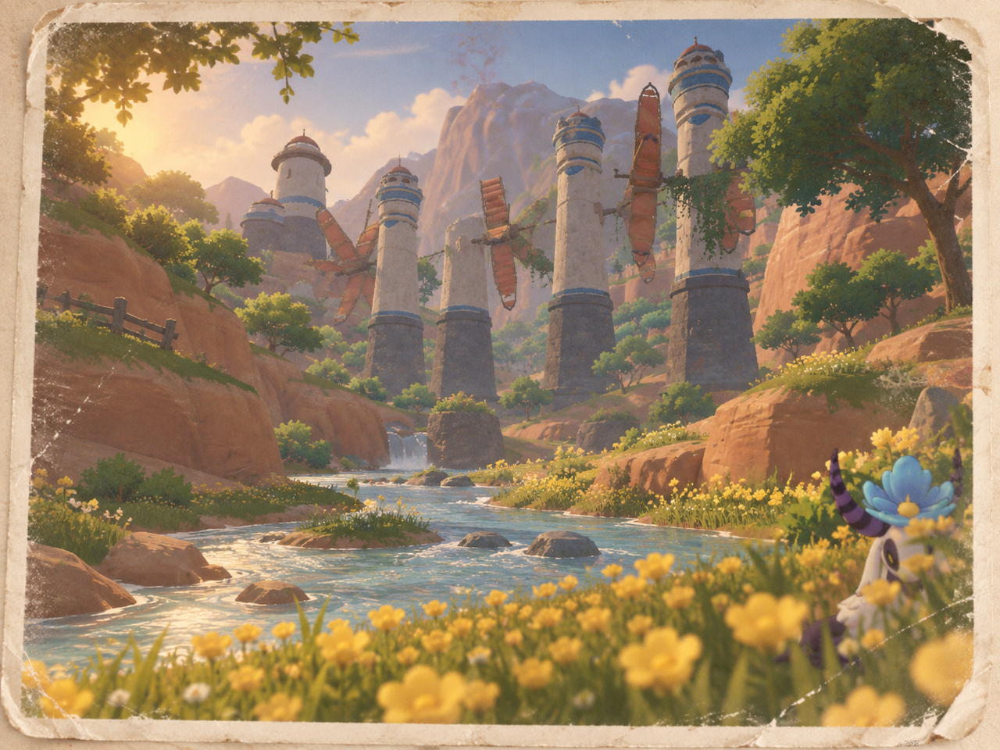
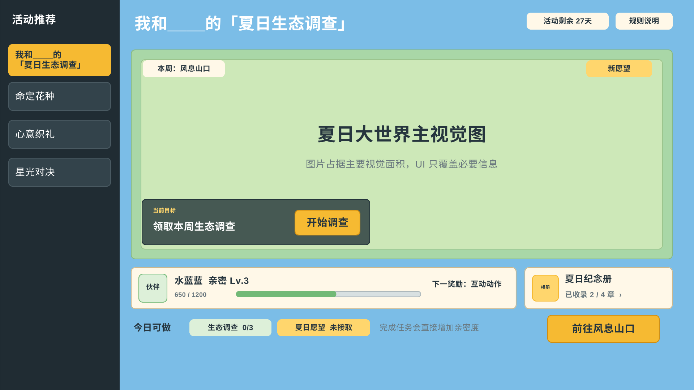
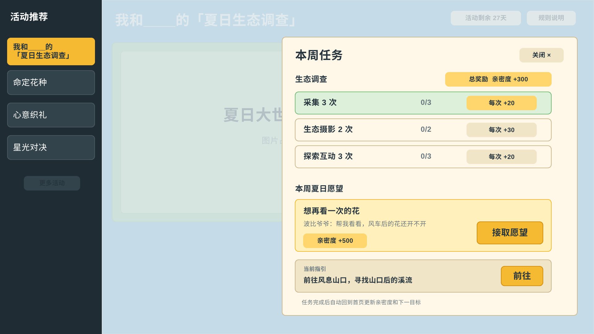
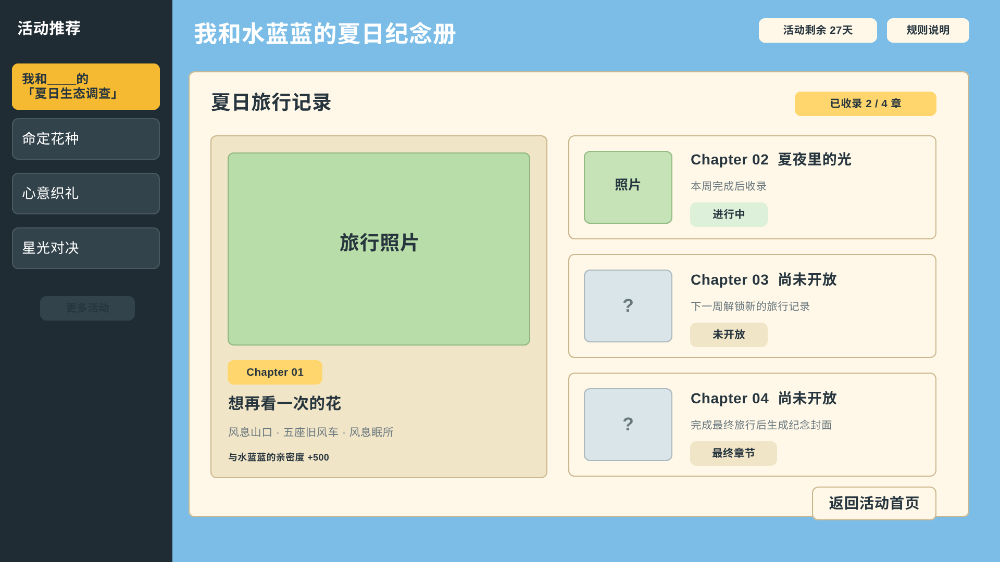

带动持续参与
每周更新调查主题，以分阶段任务承接暑期活跃。
活动运营策划 · 任务剧情 · 界面原型
在赛季中期，用每周生态调查和居民委托，给玩家一个带着精灵重返大世界的理由。
每周更新调查主题，以分阶段任务承接暑期活跃。
把亲密度培养融入探索与互动，减少重复跑图的疲劳。
培养中的精灵获得成长，满亲密的老搭档也有合影与纪念奖励。
个人活动策划方案；以上为设计目标，非上线运营成果。

选择伙伴 → 每周调查 → 居民委托 → 合影留念
旧照片、居民心愿和生态变化成为线索，让跑图有明确目的。
把伙伴协作放进观察、互动与任务推进，建立同行的记忆。
每次调查留下照片和经历，让阶段成长可见，也为分享留下素材。
波比爷爷请玩家寻找旧照片里的风景。玩家带着精灵循线调查、帮助花影羚羊，最后用合影完成委托。
设计重点：将精灵习性变成互动条件，用人物心愿串起探索、伙伴协作与摄影。


从活动入口到任务推进，再到照片收录，让玩家随时知道下一步做什么。



活动方案、任务剧情与界面原型的讲解节选。